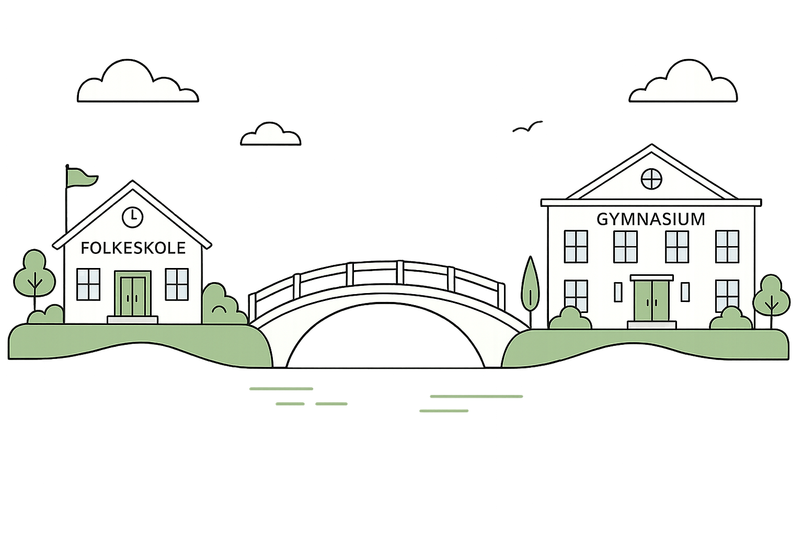
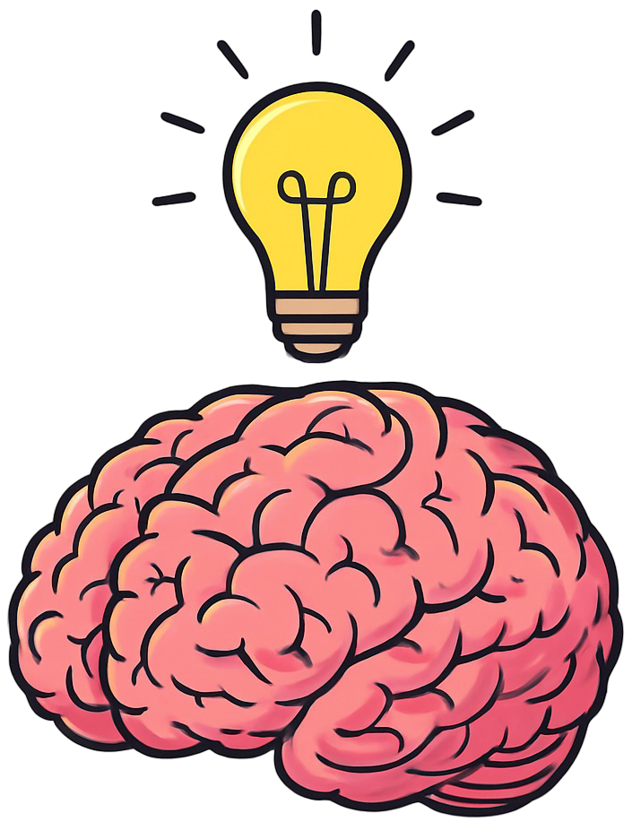

Eureka er en digital læringsplatform tilegnet gymnasiet, der bygger bro mellem folkeskole og ungdomsuddandelse, giver elever et visuelt overblik over pensum og støtter læreren med differentieret undervisning.
Prøv gratis demo
Danmark står over for en stigende udfordring: Unge har det sværere end nogensinde før med matematik. Eureka forsøger at understøtte arbejdet elever med at genopbygge fundamentet, lukke faglige huller, skabe en oplevelse af mestring og dermed bygge bro mellem folkeskolen og gymnasiet.
Læs mereEureka er bygget på idéen om, at matematik skal opdages. Det er troen på, at undervisning handler om at et barn er ikke en flaske der skal fyldes, men et bål der skal tændes, som Eureka er bygget på.
Læs mere
Eureka er et græsk udtryk, der betyder "Jeg har fundet", og bruges som udråbsord for at fejre en opdagelse. At få en følelse af opdagelse er kernen i undervisning – det ligger i ordet education, fra latin educere, “at føre ud”: ikke at fylde ind, men at trække frem det, man allerede kan opdage selv.